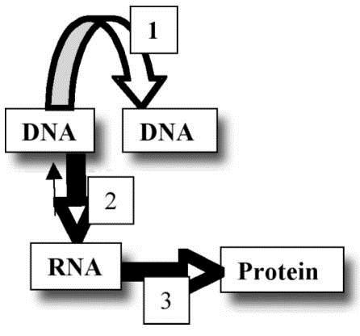
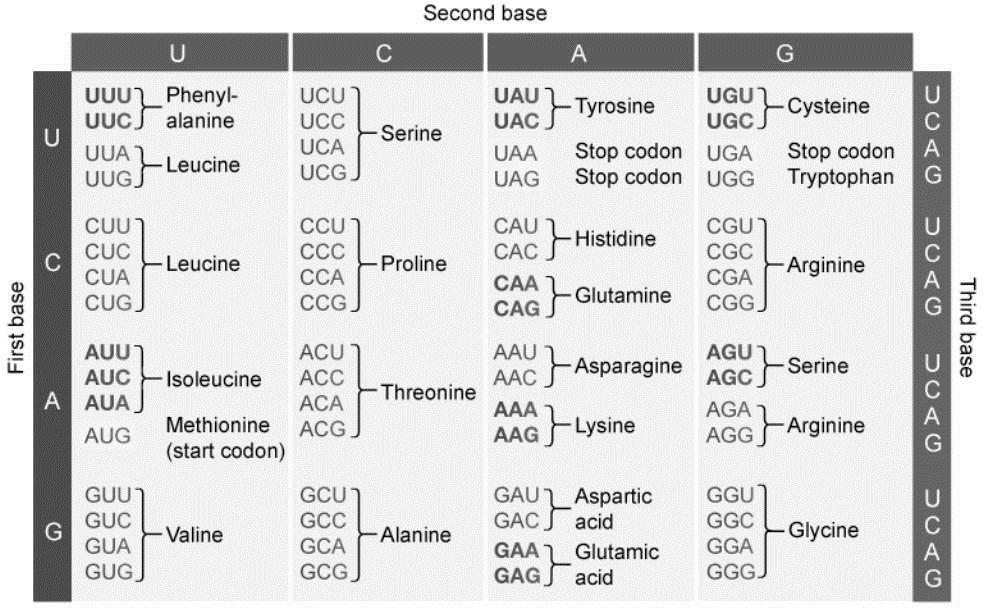

Study Guide: Short Unit Test
Topics and Chapters:
Chapter 10 and parts of Chapter 11; (gene expression Central Dogma)
Which one of the following sequences best describes the flow
of information when a gene directs the synthesis of a cellular
component?
2) The transfer of genetic
information from DNA to RNA is called
3)
Experiments have demonstrated that the "words" of the
genetic code (the units that specify amino acids) are
4)
A base substitution mutation in a gene sometimes has no effect on
the protein the gene codes for. Which of the following factors
could account for this?
5) Which of the
following enzymes catalyzes the linking together of RNA nucleotides
to form RNA?
6) Which one of the following
occurs when RNA polymerase attaches to the promoter DNA?
7)
Where do transcription and translation occur in prokaryotic cells?
8) Any change in the nucleotide sequence of the DNA of
a gene is called
9) Which of the following
features would characterize a lytic cycle of viral infection?
10) The term gene expression refers to the
11) In a prokaryote, a group of genes that is
transcribed on a single mRNA molecule is called a(n)
12)
Most differentiated cells retain….
13) The
coding regions of a gene (the portions that are expressed as
polypeptide sequences) are called
14) Which of
the following permits a single gene to code for more than one
polypeptide?
15) A particular protein is 400
amino acids long. How many nucleotide base pairs in the template
strand of DNA are required to code for this protein?
16)
When examining the genetic code, it is apparent that:
17) The relationship between a gene and a messenger
RNA is as follows:
18) The following is a
short segment of an mRNA molecule. The polypeptide it codes for is
also shown:
5' AUG/GUG/CUG/AAG 3':
methionine-valine-leucine-lysine
A mutation
in the DNA occurs so that the fourth base (counting from the 5' end)
in the messenger RNA now reads A rather than G. What sequence of
peptides will the mRNA now code for? (You do not need a copy of the
genetic code to answer the question.)
19) This diagram
shows the major components of the central dogma of molecular biology
as described in your text. The three numbered arrows represent which
three major processes related to that central dogma?

Using this code table, consider the following template
strand of a DNA molecule when answering the following
questions.Template strand: 3' TGATGGCCGGGGGCC 5'

20) How many amino acids would be coded for by this sequence?
21) The first and last amino acids produced by this
mRNA sequence would be, respectively, (you’ll need the
chart on the page before)
22) An intron is a section
of…
24) Both prokaryotic and eukaryotic
cells use which of the following to turn certain genes on or off?
25) The textbook authors' analogy between the
regulation of gene expression and the movement of water through
pipes does not include
26) What are the possible implications when a nucleotide is changed in mRNA from the original DNA template?